Version de travail Les captures de démonstration et les vues reconstituées ne sont pas des preuves de transactions exécutées. Aucune session métier authentifiée n’est présentée comme capturée.
Sommaire des parcours
Codes stables pour naviguer et commenter le document.
Tableau 1 — Carte du guide
Partie
Chapitres
Question utilisateur
Comprendre
00–05
Comment les trois flux se rejoignent-ils ?
I · Fournisseur
F01–F09
D’où vient la vitre et quand est-elle disponible ?
II · Client
C01–C13
Que demande le client et comment livrer / facturer ?
III · Atelier
A01–A28
Comment planifier, corriger et compenser ?
IV · Stock / Recomposition
S01–S14
Comment matérialiser les transformations ?
V · Exceptions
E01–E12
Que faire face à un écart ?
VI · Exercices / validation
X01–X03, V01
Comment tester et approuver le parcours ?
Glossaire / annexes / index
GLOSS, N01–N02, I01
Où trouver définitions, limites et captures ?
Lire F01–F09 pour la matière, C01–C07 pour la demande, puis A01–S14. Le Flux Client reprend en C08. Les opérations A12–A17 sont des choix selon le constat, pas une série d’actions toutes obligatoires.
00 · Bienvenue dans mat_reco
Objectif Comprendre le parcours complet avant les écrans.
mat_reco organise les matières dimensionnées, leurs pièces et leurs chutes. Le fournisseur fournit la matière ; le client exprime un besoin ; l’atelier rapproche les deux. Les Repack constatent les transformations en stock.
Tableau 2 — Trois niveaux à distinguer
Préparer
Constater
Transformer
Devis / commande et Planification MCP
Retour Terrain et incidents
Stock Entry Repack soumis
Besoin et plan à contrôler
Résultat effectif à enregistrer
Pièces / ouvrages réellement disponibles
Ne pas confondre Un dessin, un nom de série prévu ou un brouillon ne prouvent pas une disponibilité physique en stock.
Ensuite 01 — lire la carte globale ; puis 02 — comprendre les liens des documents.
01 · Carte globale des trois flux
Schéma G01 · Deux entrées convergent vers le MCP : matière disponible et besoin dimensionné.
02 · Documents ERPNext et relations
Schéma G06 · Repack de découpe et Repack de recomposition sont deux opérations distinctes.
Jonction C07 → A01 transmet le besoin ; S14 → C08 rend le produit au parcours client.
03 · Rôles et responsabilités
Tableau 3 — Responsabilités à approuver
Rôle proposé
Responsabilité
À confirmer
Achats / stock
Approvisionnement et réception
Choix PO / PR / Receipt Plan
Commercial
Devis et besoin confirmé
Création / soumission de commande
Opérateur atelier
Constats et opérations terrain
Droits sur incidents
Responsable atelier
Couverture et plan effectif
Droit de valider la compensation
Responsable stock
Contrôle et soumission Repack
Ordre avec la soumission MCP
Expédition / facturation
Livraison, facture, références
Chemins et traitement stock
Administrateur
Articles, scripts, droits
Les DocTypes livrent System Manager
Décision ouverte V01 L’ordre de soumission du MCP et des Repack ne constitue pas encore une procédure officielle.
04 · Lire les repères visuels
Position Le mini-graphe marque la phase courante et le code de fiche.
Tableau 4 — Code couleur
Couleur
Usage
Bleu
Préparation, atelier et action
Vert
Résultat, disponibilité et stock réel
Orange
Contrôle, attention et décision
Rouge
Blocage, risque ou écart
Violet / gris
Client, contexte et navigation
Objectif Ce qu’il faut obtenir.
Pourquoi L’utilité métier de l’étape.
Entrées Informations nécessaires.
Action Gestes à réaliser.
Contrôle Points à vérifier.
Résultat Condition avant de poursuivre.
Étape suivante Transition vers un chapitre.
Attention Portée et erreurs fréquentes.
Astuce Lire les images en pleine résolution depuis l’index Excel.
Démonstration : code réel de composant, données / réponses locales simulées. Reconstituée : illustration d’un formulaire à partir des champs et procédures. Réelle : capture de session ERPNext ; aucune n’est revendiquée dans ce lot.
05 · Cas pratique fil rouge
Tableau 5 — Jeu cohérent de formation
Élément
Valeur fictive
Contrôle
Matière
2 plaques 3210 × 2000 × 6 mm
12,84 m² au total
Commande SO-DEMO-001
2 OUVRAGE-DEMO
2 DECOUPE-6MM par ouvrage
Besoins atelier
4 pièces 800 × 600 × 6 mm
1,92 m² de produits découpés
Service ligne parent
PERIMETRE pour 2 ouvrages
2,8 m × 2 = 5,6 m
Scénario de casse
Pièce P2 détruite
3 conformes + 1 à remplacer
Stock complémentaire
Chute 600 × 800 × 6
Rotation terrain à 90° possible
Simplifications explicites Les scènes géométriques utilisent kerf = 0 pour montrer clairement les gestes. Utiliser le kerf réel dans la recette. La variante Chute en L utilise une scène distincte 1800 × 1500 mm.
PO / PR et Material Receipt Plan sont deux scénarios alternatifs de réception des deux plaques : ne pas les additionner. Les identifiants présents dans les illustrations sont fictifs.
Définir matière, épaisseur et quantité à approvisionner.
Points de contrôle
Article PRIMAIRE correct.
Dimension utile et épaisseur compatibles.
Quantité à acheter justifiée.
Résultat attendu Matière à acheter définie.
Étape suivante F02 ou F05 selon circuit
Attention / erreurs fréquentes Le besoin d’achat n’est pas un rectangle déjà disponible au MCP. Voir E02.
F02 · Créer une commande fournisseur
Standard ERPNext · à confirmer sur site
Position dans le flux · étape F02
Rôle Responsable stock / achats
Document Purchase Order
Objectif Purchase Order prêt à être réceptionné.
Pourquoi cette étape ? Donner au fournisseur une commande traçable avant réception, lorsque le circuit achat le prévoit.
Quand l’utiliser Au passage indiqué du flux, après contrôle des entrées nécessaires.
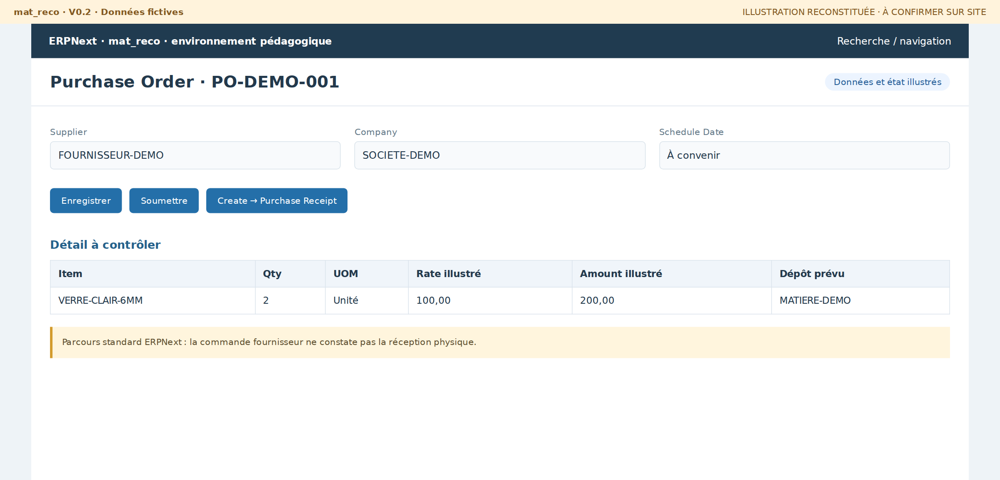
Figure 1 · F02_01 — Commander deux plaques ; préparer la réception selon le circuit. [reconstituée ; à confirmer sur site]
Entrées / prérequis Fournisseur, société, article, quantité, prix et date attendue.
Actions à réaliser
Créer Purchase Order selon la procédure achat.
Renseigner les lignes et le dépôt prévu.
Contrôler les spécifications de matière et les dates.
Enregistrer puis soumettre selon les droits.
Points de contrôle
Fournisseur et société.
Quantité et unité d’achat.
Dimensions dans l’article ou la spécification d’achat.
Résultat attendu Purchase Order prêt à être réceptionné.
Étape suivante F03
Attention / erreurs fréquentes mat_reco n’impose pas Purchase Order à toutes les réceptions. Des colonnes de dimensions sur PO ne sont pas confirmées par les fixtures du module.
F03 · Préparer la réception physique
Procédure proposée à valider
Position dans le flux · étape F03
Rôle Responsable stock / achats
Document Contrôle physique / justificatif
Objectif Livraison fournisseur contrôlée.
Pourquoi cette étape ? Vérifier que ce qui arrive correspond à ce qui sera enregistré en stock.
Quand l’utiliser Au passage indiqué du flux, après contrôle des entrées nécessaires.
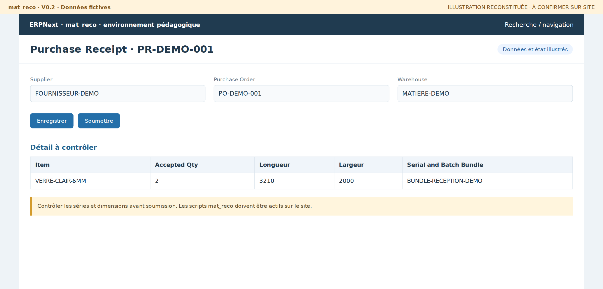
Figure 2 · F04_01 — Recevoir la matière commandée et renseigner le bundle. [reconstituée ; à confirmer sur site]
Identifier si les unités passent par Purchase Receipt.
Si le circuit autorisé est dimensionné hors ce chemin, utiliser Material Receipt Plan.
Ne pas ressaisir les mêmes unités dans l’autre document.
Points de contrôle
Le justificatif correspond au document choisi.
Une seule entrée réelle par unité.
Commande fournisseur non supposée obligatoire partout.
Résultat attendu Circuit approprié identifié.
Étape suivante F04 ou F05
Attention / erreurs fréquentes Les deux circuits convergent vers Serial No et stock ; ils ne sont pas deux étapes successives obligatoires.
F07 · Contrôler les Serial No générés
Fonction mat_reco · déduite du code
Position dans le flux · étape F07
Rôle Responsable stock / achats
Document Serial No / Serial and Batch Bundle
Objectif Plaques identifiées.
Pourquoi cette étape ? Chaque plaque doit rester identifiable après réception et durant sa transformation.
Quand l’utiliser Au passage indiqué du flux, après contrôle des entrées nécessaires.
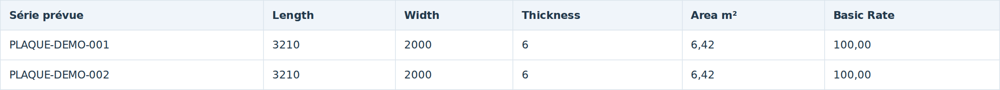
Figure 4 · F07_01 — Les identifiants prévus deviennent des Serial No lors de la soumission. [reconstituée ; à confirmer sur site]
Entrées / prérequis Réception soumise ; identifiants de séries et bundle.
Actions à réaliser
Lire les séries du mouvement réception.
Ouvrir les Serial No concernés.
Comparer le nombre de séries au nombre d’unités reçues.
Points de contrôle
Article de la série.
Absence de doublon.
Les identifiants prévus sont bien devenus des séries réelles.
Résultat attendu Plaques identifiées.
Étape suivante F08
Attention / erreurs fréquentes Si un contrôle est incohérent, ne pas poursuivre sans résolution.
F08 · Contrôler dimensions, épaisseur et qualité
Fonction mat_reco · déduite du code
Position dans le flux · étape F08
Rôle Responsable stock / achats
Document Serial No
Objectif Matière physiquement qualifiée.
Pourquoi cette étape ? Une plaque au mauvais format ou de mauvaise qualité ne doit pas être utilisée par erreur.
Quand l’utiliser Au passage indiqué du flux, après contrôle des entrées nécessaires.
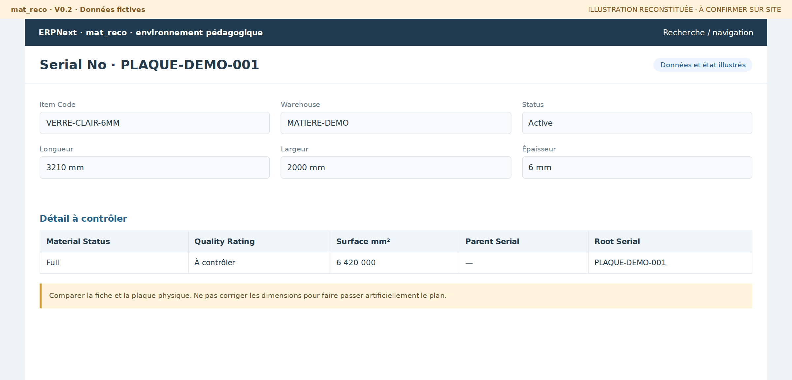
Figure 5 · F08_01 — Dimensions et état physique de la plaque. [reconstituée ; à confirmer sur site]
Entrées / prérequis Fiche Serial No ; plaque physique ; spécification de matière.
Actions à réaliser
Comparer dimensions et épaisseur à la plaque.
Contrôler état matériel et qualité.
Faire corriger une incohérence de réception par le responsable avant planification.
Points de contrôle
Dimensions positives.
Épaisseur compatible.
État Full / Partial et matière utile correcte.
Résultat attendu Matière physiquement qualifiée.
Étape suivante F09
Attention / erreurs fréquentes Les champs et le report d’épaisseur doivent être contrôlés sur le site ; ne pas inventer une valeur pour rendre une plaque admissible.
F09 · Vérifier le dépôt et la disponibilité
Fonction mat_reco · déduite du code
Position dans le flux · étape F09
Rôle Responsable stock / achats
Document Serial No / stock candidat
Objectif Stock utilisable par le MCP.
Pourquoi cette étape ? Le MCP doit trouver une matière réellement disponible dans son dépôt, pas une simple série prévue.
Quand l’utiliser Au passage indiqué du flux, après contrôle des entrées nécessaires.
Figure 6 · F09_01 — Matière de référence et chute stock dans le bon dépôt. [reconstituée ; à confirmer sur site]
Attention / erreurs fréquentes Si un contrôle est incohérent, ne pas poursuivre sans résolution.
C02 · Créer un devis
Standard ERPNext · à confirmer sur site
Position dans le flux · étape C02
Rôle Utilisateur commercial habilité
Document Quotation
Objectif Quotation préparée.
Pourquoi cette étape ? Conserver la demande, les prix et les conditions dans un document commercial.
Quand l’utiliser Au passage indiqué du flux, après contrôle des entrées nécessaires.
Figure 7 · C02_01 — Exprimer le besoin client avant la découpe. [reconstituée ; à confirmer sur site]
Entrées / prérequis Client, société, articles et besoin confirmé.
Actions à réaliser
Créer Quotation.
Renseigner les lignes et quantités.
Saisir les dimensions et services des étapes C03 / C04.
Contrôler et enregistrer le devis.
Points de contrôle
Client et validité du devis.
Articles corrects.
Conditions de vente selon procédure.
Résultat attendu Quotation préparée.
Étape suivante C03
Attention / erreurs fréquentes Si un contrôle est incohérent, ne pas poursuivre sans résolution.
C03 · Saisir dimensions et quantités
Fonction mat_reco · déduite du code
Position dans le flux · étape C03
Rôle Utilisateur commercial habilité
Document Quotation Item / Sales Order Item
Objectif Besoin dimensionné.
Pourquoi cette étape ? Les dimensions client guident la découpe et les contrôles de conformité.
Quand l’utiliser Au passage indiqué du flux, après contrôle des entrées nécessaires.
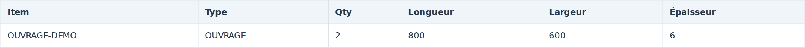
Figure 8 · C03_01 — Contrôler quantité et trois dimensions de la ligne commerciale. [reconstituée ; à confirmer sur site]
Entrées / prérequis Ligne DECOUPE ou OUVRAGE ; quantité finale.
Actions à réaliser
Saisir longueur, largeur / hauteur et épaisseur en mm.
Vérifier la quantité de la ligne.
Contrôler le nom et la description dimensionnés lorsque les scripts les complètent.
Points de contrôle
Valeurs positives.
Aucune confusion mm / m.
Dimensions et quantité reprises dans la commande.
Résultat attendu Besoin dimensionné.
Étape suivante C04 / C06
Attention / erreurs fréquentes Les contrôles devis et commande ne sont pas identiques : contrôler l’épaisseur même si un formulaire ne bloque pas sa saisie. Voir E03.
C04 · Ajouter services et accessoires
Fonction mat_reco · déduite du code
Position dans le flux · étape C04
Rôle Utilisateur commercial habilité
Document Quotation · Services / Accessoires
Objectif Devis complet.
Pourquoi cette étape ? Associer à la ligne principale les prestations et accessoires qui complètent le besoin.
Quand l’utiliser Au passage indiqué du flux, après contrôle des entrées nécessaires.
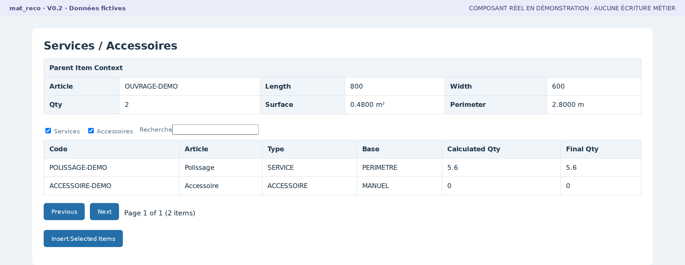
Figure 9 · C04_01 — Le calcul de services utilise dimensions et quantité de la ligne parent. [démonstration ; à confirmer sur site]
Entrées / prérequis Ligne parent DECOUPE ou OUVRAGE avec dimensions et quantité.
Actions à réaliser
Ouvrir Services / Accessoires sur la ligne si le bouton est actif.
Filtrer les éléments et lire la base de calcul.
Contrôler les quantités finales.
Sélectionner et insérer les lignes voulues.
Points de contrôle
Lien à la ligne parent.
SURFACE / PERIMETRE / PIECE / FIXE / MANUEL.
Prix et quantités après insertion.
Résultat attendu Devis complet.
Étape suivante C06
Attention / erreurs fréquentes Le calcul part de la ligne parent. Il ne multiplie pas automatiquement le périmètre par tous les composants internes d’un ouvrage.
C05 · Définir les articles DECOUPE et OUVRAGE
Fonction mat_reco · déduite du code
Position dans le flux · étape C05
Rôle Responsable métier / administrateur articles
Document Item / Composite Item Detail
Objectif Besoin correctement structuré.
Pourquoi cette étape ? La structure des articles permet au système de convertir un ouvrage en découpes.
Quand l’utiliser Au passage indiqué du flux, après contrôle des entrées nécessaires.
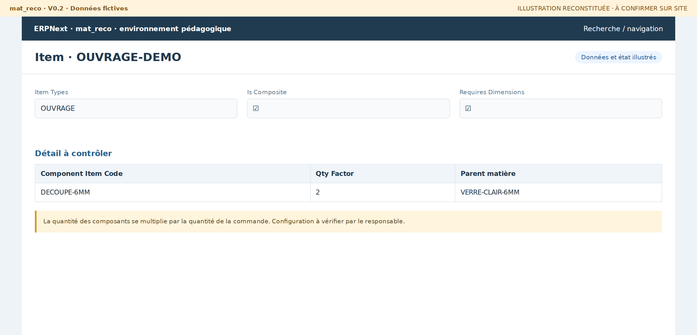
Figure 10 · C05_01 — Deux composants par ouvrage ; quatre découpes pour deux ouvrages. [reconstituée ; à confirmer sur site]
Entrées / prérequis Item de matière ; DECOUPE ; composants et facteurs d’OUVRAGE.
Actions à réaliser
Faire contrôler les types PRIMAIRE, DECOUPE et OUVRAGE.
Vérifier Parent Item de la découpe.
Vérifier les composants et Qty Factor de l’ouvrage.
Points de contrôle
Descendance de la matière source.
Facteurs de quantité.
Absence de références circulaires.
Résultat attendu Besoin correctement structuré.
Étape suivante C02 / C06
Attention / erreurs fréquentes Le paramétrage d’article est un prérequis. L’opérateur ne doit pas modifier les composants pour contourner une rupture de stock.
C06 · Transformer le devis en Sales Order
Standard ERPNext · à confirmer sur site
Position dans le flux · étape C06
Rôle Utilisateur commercial habilité
Document Quotation → Sales Order
Objectif Sales Order confirmée.
Pourquoi cette étape ? Confirmer le besoin commercial qui alimentera l’atelier et la livraison.
Quand l’utiliser Au passage indiqué du flux, après contrôle des entrées nécessaires.
Figure 11 · C06_01 — Confirmer le besoin et garder sa référence de ligne. [reconstituée ; à confirmer sur site]
Entrées / prérequis Devis contrôlé ; droits ; validation commerciale.
Actions à réaliser
Soumettre le devis selon la procédure.
Utiliser Create → Sales Order si disponible.
Contrôler lignes, dimensions, quantités et références.
Enregistrer puis soumettre la commande selon les droits.
Points de contrôle
Validité et état du devis.
Dimensions conservées.
Bonne ligne de commande associée au produit.
Résultat attendu Sales Order confirmée.
Étape suivante C07
Attention / erreurs fréquentes ERPNext permet d’autres chemins de création de commande. Le parcours présenté ne les interdit pas.
C07 · Transmettre les besoins à l’atelier
Fonction mat_reco · déduite du code
Position dans le flux · étape C07
Rôle Utilisateur commercial habilité
Document Sales Order → MCP
Objectif Besoins disponibles pour le MCP.
Pourquoi cette étape ? Transmettre au Flux 3 un besoin unitaire de découpe, lié à la commande.
Quand l’utiliser Au passage indiqué du flux, après contrôle des entrées nécessaires.
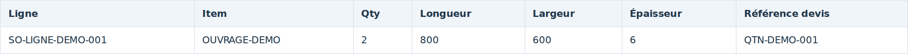
Figure 12 · C07_01 — Passage C07 → A01 : quatre unités dimensionnées. [reconstituée ; à confirmer sur site]
Entrées / prérequis Sales Order ; article et composants ; matière source.
Actions à réaliser
Identifier la ligne à produire.
Vérifier l’explosion des composants en DECOUPE.
Passer à A01 puis sélectionner la commande dans le MCP.
Points de contrôle
Référence Sales Order et ligne.
Quantité commerciale versus nombre de composants.
Matière source compatible.
Résultat attendu Besoins disponibles pour le MCP.
Étape suivante A01 — entrer dans le Flux 3
Attention / erreurs fréquentes Le flux commercial exprime le besoin ; il ne découpe pas lui-même les plaques. Voir E01.
C08 · Suivre l’état de fabrication
Procédure proposée à valider
Position dans le flux · étape C08
Rôle Utilisateur commercial habilité
Document Sales Order / MCP / Repack
Objectif Couverture des quantités connue.
Pourquoi cette étape ? Reprendre le flux commercial uniquement après contrôle des résultats atelier et stock.
Quand l’utiliser Au passage indiqué du flux, après contrôle des entrées nécessaires.
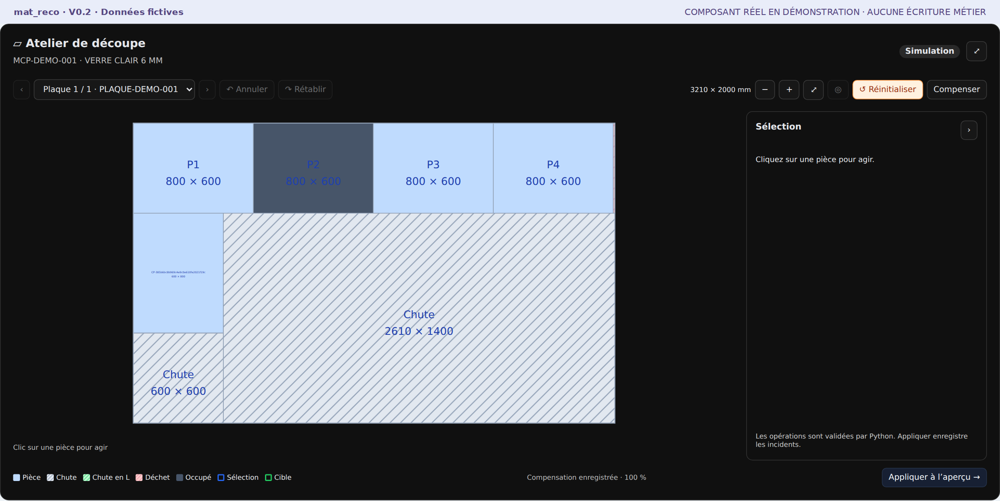
Figure 42 · A26_01 — Contrôler le remplacement et les restes conservés. [démonstration ; à confirmer sur site]
Entrées / prérequis Retour S14 ; plan effectif ; mouvements soumis et besoins restants.
Actions à réaliser
Lire le bilan de production.
Comparer quantités conformes et quantités demandées.
Faire traiter une insuffisance par A19 / A24.
Passer à C09 si les produits sont réellement disponibles.
Points de contrôle
Couverture du besoin.
Pièce détruite non comptée.
Recomposition achevée si l’article livré est un ouvrage.
Résultat attendu Couverture des quantités connue.
Étape suivante C09 ou retour A19
Attention / erreurs fréquentes Ce chapitre ne suppose pas un tableau automatique de suivi fabrication qui n’a pas été confirmé sur le site.
C09 · Vérifier les produits finis disponibles
Fonction mat_reco · déduite du code
Position dans le flux · étape C09
Rôle Responsable stock / expédition
Document Serial No / Stock Entry / stock
Objectif Pièces / ouvrages prêts à livrer.
Pourquoi cette étape ? Éviter de livrer une prévision ou une pièce qui n’est pas dans l’entrepôt.
Quand l’utiliser Au passage indiqué du flux, après contrôle des entrées nécessaires.
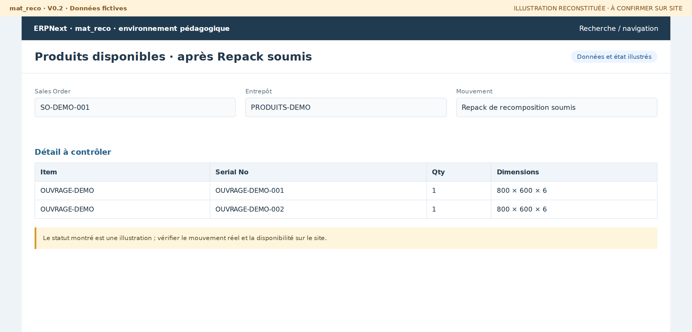
Figure 56 · S14_01 — Retour S14 → C08 / C09 : deux ouvrages prêts à livrer. [reconstituée ; à confirmer sur site]
Entrées / prérequis Produits ou ouvrages après Repack soumis.
Actions à réaliser
Vérifier article et quantité disponibles.
Contrôler les Serial No dans le dépôt de livraison.
Préparer la sélection de séries / bundle.
Points de contrôle
Produit conforme.
Entrepôt correct.
Aucune série déjà sortie.
Résultat attendu Pièces / ouvrages prêts à livrer.
Étape suivante C10
Attention / erreurs fréquentes Si un contrôle est incohérent, ne pas poursuivre sans résolution.
C10 · Préparer et soumettre Delivery Note
Standard ERPNext · à confirmer sur site
Position dans le flux · étape C10
Rôle Responsable expédition / stock
Document Delivery Note
Objectif Delivery Note soumise.
Pourquoi cette étape ? Constater les produits remis au client selon la procédure de livraison.
Quand l’utiliser Au passage indiqué du flux, après contrôle des entrées nécessaires.
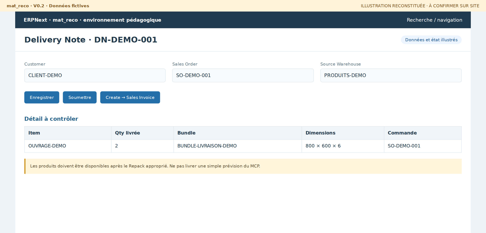
Figure 13 · C10_01 — Livrer les produits disponibles et sélectionner leurs séries. [reconstituée ; à confirmer sur site]
Depuis Sales Order, utiliser Create → Delivery Note si autorisé.
Contrôler les lignes et quantités livrées.
Associer les séries / bundles corrects.
Enregistrer et soumettre après contrôle.
Points de contrôle
Quantité réellement livrée.
Dépôt source.
Référence de commande.
Résultat attendu Delivery Note soumise.
Étape suivante C11 puis C12
Attention / erreurs fréquentes La livraison de notre parcours principal est distincte de la facture. Contrôler les variantes site avant un autre chemin.
C11 · Contrôler les Serial No et les dimensions livrées
Fonction mat_reco · déduite du code
Position dans le flux · étape C11
Rôle Responsable expédition / stock
Document Delivery Note Item / Serial and Batch Bundle
Objectif Traçabilité de livraison contrôlée.
Pourquoi cette étape ? Relier la livraison aux unités physiques et aux dimensions effectivement remises.
Quand l’utiliser Au passage indiqué du flux, après contrôle des entrées nécessaires.
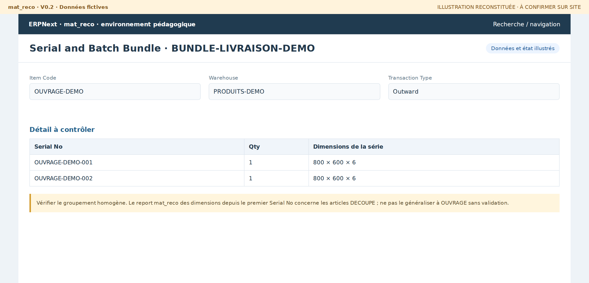
Figure 14 · C11_01 — Deux produits identifiés ; dimensions homogènes. [reconstituée ; à confirmer sur site]
Entrées / prérequis Delivery Note ; bundle de ses lignes ; Serial No.
Actions à réaliser
Ouvrir le bundle.
Comparer chaque série à la livraison.
Vérifier longueur, largeur et épaisseur affichées sur les DECOUPE.
Points de contrôle
Groupement homogène.
Première série utilisée par le report de dimensions.
Article, série et commande cohérents.
Résultat attendu Traçabilité de livraison contrôlée.
Étape suivante C12
Attention / erreurs fréquentes Le report mat_reco depuis la première série vise DECOUPE. Ne pas généraliser ce comportement à OUVRAGE sans confirmation. Voir E08.
C12 · Créer Sales Invoice
Standard ERPNext · à confirmer sur site
Position dans le flux · étape C12
Rôle Utilisateur facturation habilité
Document Delivery Note → Sales Invoice
Objectif Sales Invoice préparée.
Pourquoi cette étape ? Facturer le parcours commercial avec ses références et quantités livrées.
Quand l’utiliser Au passage indiqué du flux, après contrôle des entrées nécessaires.
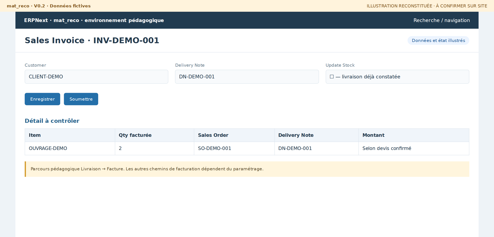
Figure 15 · C12_01 — Facturer les unités et références du parcours principal. [reconstituée ; à confirmer sur site]
Utiliser Create → Sales Invoice sur la livraison si disponible.
Contrôler les lignes et références reprises.
Vérifier le traitement stock de la facture avant validation.
Points de contrôle
Client.
Références de livraison et commande.
Quantité à facturer.
Résultat attendu Sales Invoice préparée.
Étape suivante C13
Attention / erreurs fréquentes Livraison → Facture est notre chemin pédagogique, pas une obligation universelle ERPNext. Les chemins directs depuis Sales Order restent à valider.
C13 · Contrôler facture, quantités et références
Standard ERPNext · à confirmer sur site
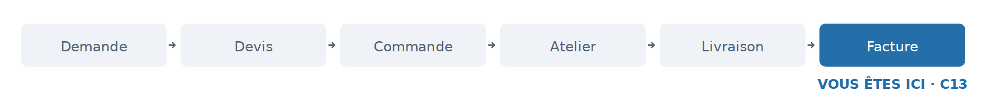
Position dans le flux · étape C13
Rôle Utilisateur facturation / responsable
Document Sales Invoice
Objectif Cycle commercial complété.
Pourquoi cette étape ? Terminer le cycle sans incohérence de quantité, de valeur ou de mouvement de stock.
Quand l’utiliser Au passage indiqué du flux, après contrôle des entrées nécessaires.
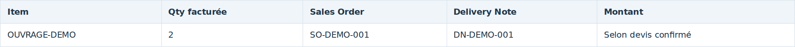
Figure 16 · C13_01 — Contrôler quantités, références et absence de double sortie de stock. [reconstituée ; à confirmer sur site]
Entrées / prérequis Facture préparée ; commande et livraison de référence.
Actions à réaliser
Comparer quantités, montants et références.
Contrôler dimensions et descriptions utiles.
Vérifier Update Stock au regard de la livraison déjà constatée.
Soumettre la facture selon la procédure de facturation.
Points de contrôle
Aucune double sortie des mêmes unités.
Conditions et montants approuvés.
Traçabilité vers le client.
Résultat attendu Cycle commercial complété.
Étape suivante V01 — contrôle final
Attention / erreurs fréquentes Le paiement et les régimes fiscaux ne sont pas traités par ce manuel mat_reco.
Flux 3 · Atelier
Cœur du guide : planifier, constater, corriger et compenser
Schéma G04 · Carte détaillée de ce parcours.
A01 · Comprendre les besoins issus des commandes
Fonction mat_reco · déduite du code
Position dans le flux · étape A01
Rôle Opérateur ou responsable atelier habilité
Document Sales Order / besoins MCP
Objectif Liste des découpes connue.
Pourquoi cette étape ? Transformer la commande en pièces unitaires à positionner, sans perdre son identité commerciale.
Quand l’utiliser Au passage indiqué du flux, après contrôle des entrées nécessaires.
Figure 12 · C07_01 — Passage C07 → A01 : quatre unités dimensionnées. [reconstituée ; à confirmer sur site]
Contrôler algorithme, heuristique et profondeur si nécessaire.
Points de contrôle
Unités mm.
Trait de coupe réaliste.
Options adaptées aux pratiques de l’atelier.
Résultat attendu Paramètres de découpe contrôlés.
Étape suivante A07
Attention / erreurs fréquentes Les scènes illustrées peuvent simplifier le kerf à 0. Ce n’est pas une recommandation de production ; utiliser la valeur réelle de l’atelier.
A07 · Générer et lire le plan initial
Fonction mat_reco · déduite du code
Position dans le flux · étape A07
Rôle Opérateur ou responsable atelier habilité
Document Material Cutting Plan / UX 2.0
Objectif Plan initial lisible et contrôlé.
Pourquoi cette étape ? Visualiser comment la matière proposée satisfait les commandes avant la coupe.
Quand l’utiliser Au passage indiqué du flux, après contrôle des entrées nécessaires.
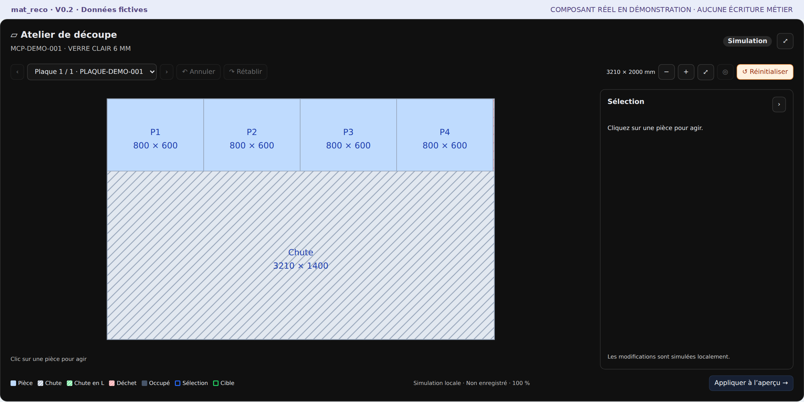
Figure 22 · A07_01 — Lire la plaque, quatre pièces et les restes. [démonstration ; à confirmer sur site]
Entrées / prérequis MCP avec commandes, stock et paramètres.
Actions à réaliser
Enregistrer pour générer le plan.
Parcourir les plaques.
Comparer demandé, planifié, manquant et restes.
Points de contrôle
Pièces positionnées.
Matières réellement utilisées.
Absence de besoin oublié.
Résultat attendu Plan initial lisible et contrôlé.
Étape suivante A08
Attention / erreurs fréquentes Le dessin d’optimisation ne certifie pas toutes les contraintes physiques de votre machine.
A08 · Comprendre produits finis, chutes et déchets
Fonction mat_reco · déduite du code
Position dans le flux · étape A08
Rôle Opérateur ou responsable atelier habilité
Document Material Cutting Plan / UX 2.0
Objectif Lecture correcte du dessin.
Pourquoi cette étape ? Éviter de traiter un déchet ou une encoche comme une chute disponible.
Quand l’utiliser Au passage indiqué du flux, après contrôle des entrées nécessaires.
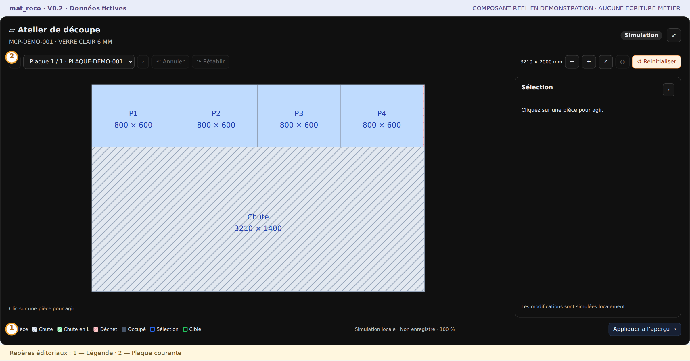
Figure 23 · A08_01 — Identifier pièces, chutes et déchet. [démonstration ; à confirmer sur site]
Entrées / prérequis Plan initial ; légende de l’atelier.
Actions à réaliser
Repérer les produits finis bleus.
Identifier chutes grises, chutes en L vertes et déchets roses.
Lire les dimensions et la plaque courante.
Points de contrôle
Zone occupée différente d’une zone libre.
Surface utile d’une chute en L.
Zoom sans effet sur dimensions.
Résultat attendu Lecture correcte du dessin.
Étape suivante A09
Attention / erreurs fréquentes Si un contrôle est incohérent, ne pas poursuivre sans résolution.
A09 · Passer en Retour Terrain
Fonction mat_reco · déduite du code
Position dans le flux · étape A09
Rôle Opérateur ou responsable atelier habilité
Document Material Cutting Plan · Retour Terrain
Objectif MCP prêt aux incidents.
Pourquoi cette étape ? Conserver la Planification de référence et décrire ensuite les résultats réels de coupe.
Quand l’utiliser Au passage indiqué du flux, après contrôle des entrées nécessaires.
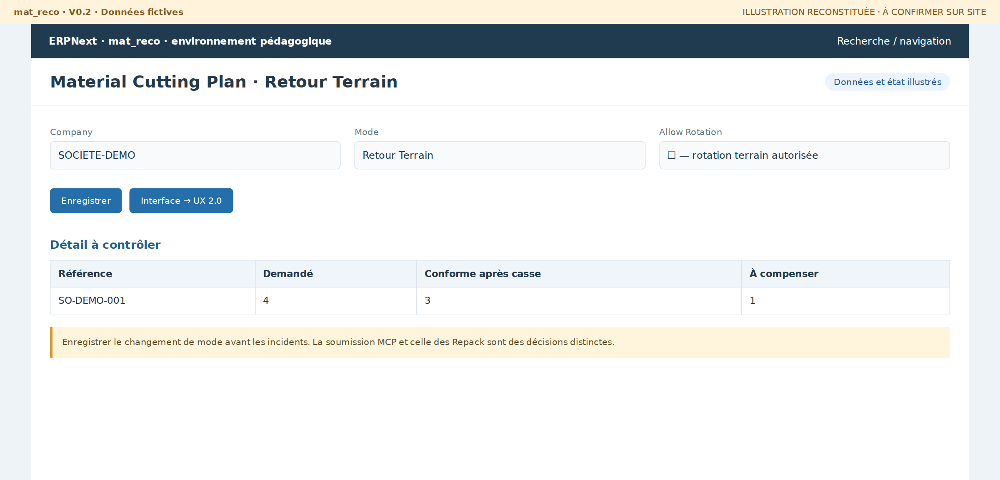
Figure 24 · A09_01 — Passer du plan initial au constat de l’atelier. [reconstituée ; à confirmer sur site]
Entrées / prérequis Plan initial enregistré ; début des constats terrain.
Actions à réaliser
Passer Mode à Retour Terrain.
Enregistrer le formulaire.
Vérifier que le plan effectif est disponible.
Points de contrôle
MCP brouillon.
Plan de Planification conservé.
Formulaire sans modification non enregistrée.
Résultat attendu MCP prêt aux incidents.
Étape suivante A10
Attention / erreurs fréquentes Si un contrôle est incohérent, ne pas poursuivre sans résolution.
A10 · Ouvrir Atelier UX 2.0
Fonction mat_reco · déduite du code
Position dans le flux · étape A10
Rôle Opérateur ou responsable atelier habilité
Document Atelier UX 2.0
Objectif Interface de travail ouverte.
Pourquoi cette étape ? Accéder à la géométrie et aux actions dans l’écran atelier.
Quand l’utiliser Au passage indiqué du flux, après contrôle des entrées nécessaires.
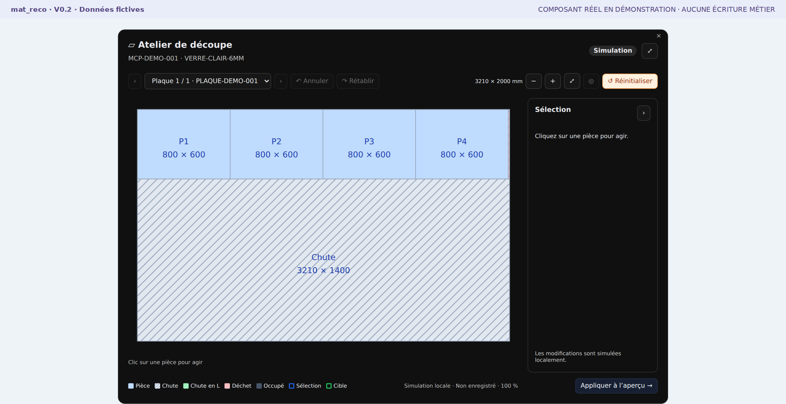
Figure 25 · A10_01 — Le vrai modal est ouvert dans un hôte Frappe local de démonstration. [démonstration ; à confirmer sur site]
Attention / erreurs fréquentes Le curseur d’interdiction indique une cible incompatible, pas une défaillance du menu.
A12 · Déplacer une pièce
Fonction mat_reco · déduite du code
Position dans le flux · étape A12
Rôle Opérateur ou responsable atelier habilité
Document Material Cutting Plan / UX 2.0
Objectif Nouvelle position prévisualisée.
Pourquoi cette étape ? Replacer une pièce dans une zone libre sans créer une autre unité commerciale.
Quand l’utiliser Au passage indiqué du flux, après contrôle des entrées nécessaires.
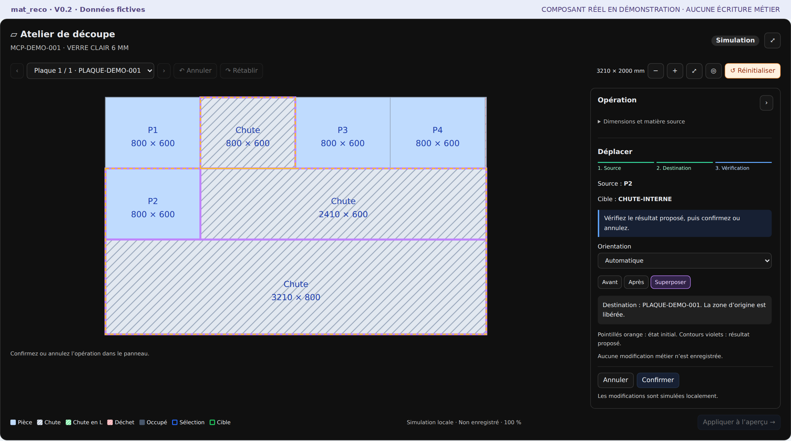
Figure 27 · A12_01 — Prévisualiser le déplacement dans une chute interne. [démonstration ; à confirmer sur site]
Entrées / prérequis Produit fini source ; chute compatible sur la même plaque ou une autre.
Actions à réaliser
Sélectionner la pièce puis Déplacer.
Changer de plaque si nécessaire.
Choisir la cible libre.
Comparer puis confirmer.
Points de contrôle
Espace suffisant.
Source libérée.
Identité de pièce conservée.
Résultat attendu Nouvelle position prévisualisée.
Étape suivante A18
Attention / erreurs fréquentes Ne pas déplacer la pièce sur une zone détruite, occupée ou dans une encoche retirée. Voir E03.
A13 · Tourner une pièce à 90°
Fonction mat_reco · déduite du code
Position dans le flux · étape A13
Rôle Opérateur ou responsable atelier habilité
Document Material Cutting Plan / UX 2.0
Objectif Orientation corrigée.
Pourquoi cette étape ? Utiliser un format de chute compatible en permutant les deux côtés de la pièce.
Quand l’utiliser Au passage indiqué du flux, après contrôle des entrées nécessaires.
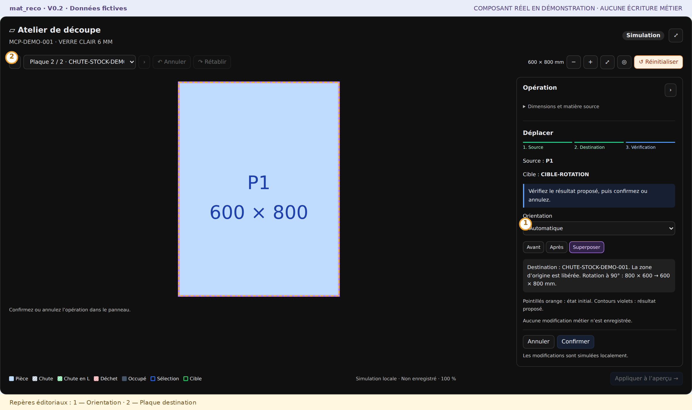
Figure 28 · A13_01 — La pièce 800 × 600 devient 600 × 800 sur une chute stock. [démonstration ; à confirmer sur site]
Entrées / prérequis Action Déplacer ; pièce et destination ; place utile.
Actions à réaliser
Dans Orientation, choisir Automatique, Actuelle ou Tourner à 90°.
Lire les dimensions résultantes.
Contrôler le placement sur la cible.
Confirmer la proposition.
Points de contrôle
800 × 600 devient 600 × 800 dans l’exemple.
Aucun empiétement.
Orientation conforme au constat physique.
Résultat attendu Orientation corrigée.
Étape suivante A18
Attention / erreurs fréquentes La rotation à 90° est disponible en Retour Terrain même si Allow Rotation était décoché en Planification. Automatique essaie d’abord l’orientation actuelle. Voir E03.
A14 · Redimensionner
Fonction mat_reco · déduite du code
Position dans le flux · étape A14
Rôle Opérateur ou responsable atelier habilité
Document Material Cutting Plan / UX 2.0
Objectif Dimensions effectives prévisualisées.
Pourquoi cette étape ? Décrire une dimension effectivement réduite sans la confondre avec une nouvelle commande.
Quand l’utiliser Au passage indiqué du flux, après contrôle des entrées nécessaires.
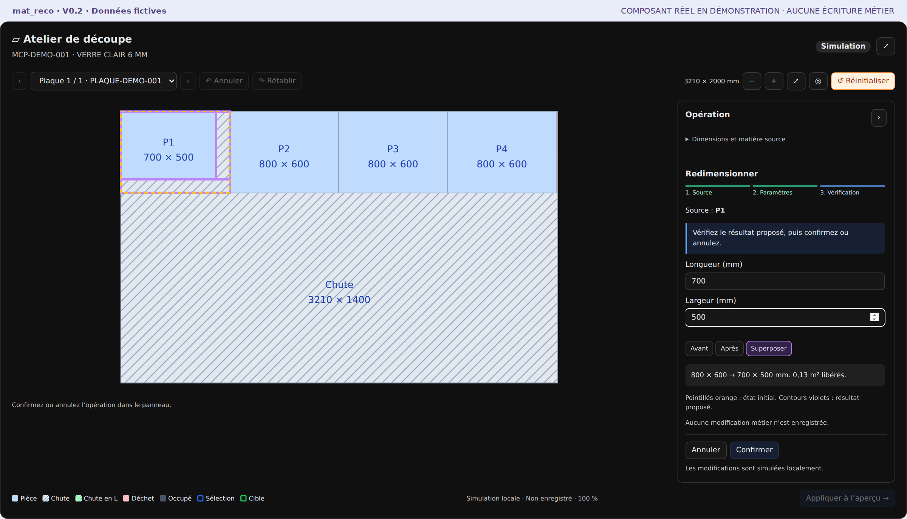
Figure 29 · A14_01 — Comparer dimensions demandées et obtenues. [démonstration ; à confirmer sur site]
Entrées / prérequis Zone dont le menu propose Redimensionner ; mesure réelle.
Actions à réaliser
Choisir Redimensionner.
Saisir longueur et largeur.
Comparer la réduction et ses compléments.
Confirmer.
Points de contrôle
Valeurs positives.
Pas d’agrandissement au-delà de la matière source.
Attention / erreurs fréquentes Une pièce plus petite peut ne plus couvrir le besoin initial. Relire le bilan après application. Voir E03.
G07 · Décision en cas de casse
Schéma G07 · Incidents, couverture et reprise en cas de casse successive.
A15 · Détruire une pièce cassée
Fonction mat_reco · déduite du code
Position dans le flux · étape A15
Rôle Opérateur ou responsable atelier habilité
Document Material Cutting Plan / UX 2.0
Objectif Incident de casse confirmé dans la session.
Pourquoi cette étape ? Déclarer qu’une pièce n’est plus utilisable et déterminer si elle doit être remplacée.
Quand l’utiliser Au passage indiqué du flux, après contrôle des entrées nécessaires.
Figure 30 · A15_01 — La pièce cassée reste une zone occupée, pas une sortie conforme. [démonstration ; à confirmer sur site]
Entrées / prérequis Pièce cassée ou zone inutilisable identifiée.
Actions à réaliser
Sélectionner la pièce.
Choisir Détruire.
Vérifier la surface indisponible.
Choisir Confirmer la destruction.
Points de contrôle
Bonne pièce et bonne commande.
Zone conservée comme occupée.
Exclusion des sorties conformes.
Résultat attendu Incident de casse confirmé dans la session.
Étape suivante A18 puis A19
Attention / erreurs fréquentes Une zone détruite ne redevient pas une chute libre. Détruire ne crée pas automatiquement le remplacement. Voir E03, E04.
A16 · Fusionner deux zones
Fonction mat_reco · déduite du code
Position dans le flux · étape A16
Rôle Opérateur ou responsable atelier habilité
Document Material Cutting Plan / UX 2.0
Objectif Chute rectangulaire prévisualisée.
Pourquoi cette étape ? Conserver une chute rectangulaire en réunissant des régions libres contiguës.
Quand l’utiliser Au passage indiqué du flux, après contrôle des entrées nécessaires.
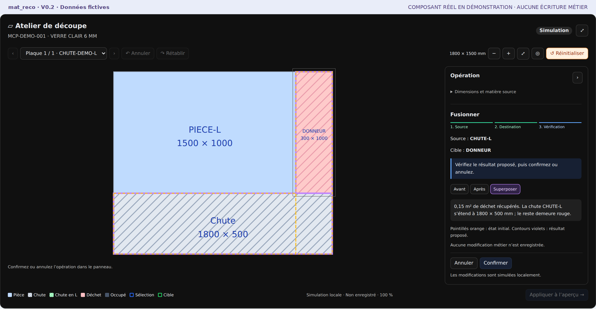
Figure 31 · A16_01 — La chute s’étend en rectangle ; le donneur peut conserver un reste. [démonstration ; à confirmer sur site]
Entrées / prérequis Chute source ; zone libre adjacente sur la même plaque.
Attention / erreurs fréquentes Le grand rectangle extérieur n’est pas entièrement disponible pour une nouvelle coupe. Voir E03, E06.
A18 · Prévisualiser, confirmer et appliquer
Fonction mat_reco · déduite du code
Position dans le flux · étape A18
Rôle Opérateur ou responsable atelier habilité
Document Material Cutting Plan / UX 2.0
Objectif Incidents enregistrés.
Pourquoi cette étape ? Séparer le choix local d’une opération de son enregistrement auprès du serveur.
Quand l’utiliser Au passage indiqué du flux, après contrôle des entrées nécessaires.
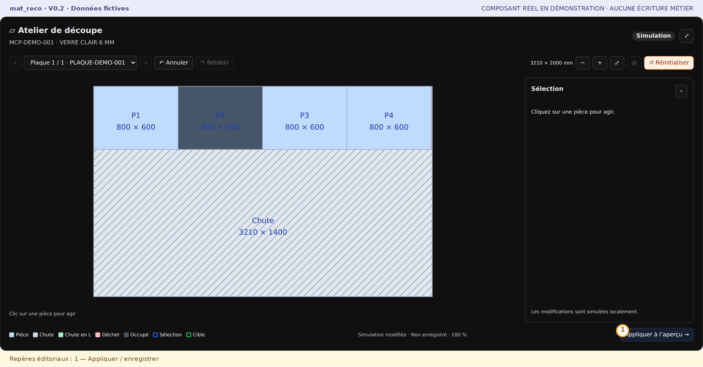
Figure 33 · A18_01 — Confirmer l’action ne suffit pas : appliquer les incidents. [démonstration ; à confirmer sur site]Figure 34 · A18_02 — Affichage après réponse de sauvegarde simulée. [démonstration ; à confirmer sur site]
Laisser l’automatique rechercher la priorité 3 ou sélectionner une source admissible.
Calculer.
Contrôler la plaque ajoutée et ses nouveaux restes.
Points de contrôle
Plaque entière réellement disponible.
Unités remplacées.
Consommation additionnelle justifiée.
Résultat attendu Entrée complémentaire proposée.
Étape suivante A24
Attention / erreurs fréquentes Une plaque entière est une nouvelle matière à intégrer au futur Repack ; ne pas la confondre avec une simple page d’affichage. Voir E05.
A24 · Calculer et valider la compensation
Fonction mat_reco · déduite du code
Position dans le flux · étape A24
Rôle Opérateur ou responsable atelier habilité
Document Material Cutting Plan / UX 2.0
Objectif Besoin compensé selon proposition confirmée.
Pourquoi cette étape ? Enregistrer uniquement une proposition contrôlée qui remplace les bonnes unités.
Quand l’utiliser Au passage indiqué du flux, après contrôle des entrées nécessaires.
Figure 40 · A24_01 — Retour atelier après confirmation simulée, distincte de la soumission Repack. [démonstration ; à confirmer sur site]
Entrées / prérequis Proposition calculée ; sources encore disponibles.
Actions à réaliser
Contrôler placements, besoins restants et avertissements.
Choisir Valider la compensation si le résultat convient.
Attendre la confirmation serveur et le retour atelier.
Ou Annuler pour revenir sans application.
Points de contrôle
Couverture.
Version document et stock.
Pas de soumission automatique MCP / Stock Entry.
Résultat attendu Besoin compensé selon proposition confirmée.
Étape suivante A26
Attention / erreurs fréquentes Calculer ne sauvegarde pas. Une compensation peut laisser des besoins restants : ne pas forcer la clôture. Voir E05, E07, E11.
A25 · Gérer les casses successives
Fonction mat_reco · déduite du code
Position dans le flux · étape A25
Rôle Opérateur ou responsable atelier habilité
Document Material Cutting Plan / UX 2.0
Objectif Reprise de production traçable.
Pourquoi cette étape ? Garder la trace d’une nouvelle casse sur un remplacement sans dupliquer la demande client.
Quand l’utiliser Au passage indiqué du flux, après contrôle des entrées nécessaires.
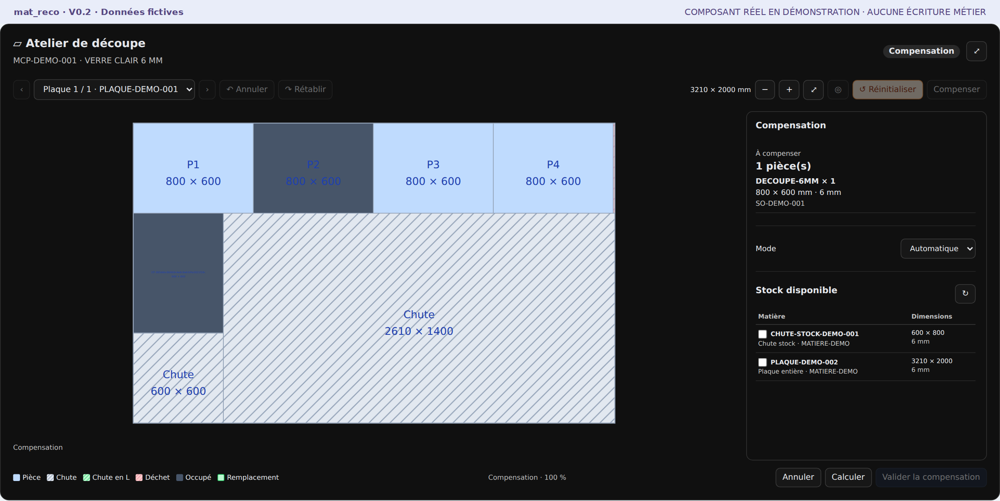
Figure 41 · A25_01 — Nouvelle casse du remplacement : conserver les opérations antérieures. [démonstration ; à confirmer sur site]
Entrées / prérequis Remplacement identifié ; nouveau constat de casse.
Actions à réaliser
Créer un nouvel incident sur la pièce concernée.
Confirmer et appliquer.
Relire le besoin restant.
Recalculer une compensation adaptée.
Points de contrôle
Opérations antérieures conservées.
Une seule unité commerciale due.
Production / consommation déjà soumises figées.
Résultat attendu Reprise de production traçable.
Étape suivante A19
Attention / erreurs fréquentes Ne pas supprimer les événements précédents pour fabriquer une seconde demande ; solliciter le responsable si la pièce est déjà engagée dans un Repack soumis. Voir E04.
A26 · Contrôler le plan effectif
Fonction mat_reco · déduite du code
Position dans le flux · étape A26
Rôle Opérateur ou responsable atelier habilité
Document Material Cutting Plan / UX 2.0
Objectif Plan effectif cohérent.
Pourquoi cette étape ? Préparer le stock à partir du résultat enregistré, pas d’une prévisualisation abandonnée.
Quand l’utiliser Au passage indiqué du flux, après contrôle des entrées nécessaires.
Figure 42 · A26_01 — Contrôler le remplacement et les restes conservés. [démonstration ; à confirmer sur site]
Entrées / prérequis Plan effectif enregistré ; couverture et géométrie.
Actions à réaliser
Parcourir les plaques utilisées et ajoutées.
Comparer conformes, remplacements et besoins.
Contrôler les restes et les zones détruites.
Points de contrôle
Toutes les unités dues couvertes.
Surface physique conservée.
Bonnes matières actives.
Résultat attendu Plan effectif cohérent.
Étape suivante A28 ou A27 si restauration voulue
Attention / erreurs fréquentes Si un contrôle est incohérent, ne pas poursuivre sans résolution.
A27 · Réinitialiser en sécurité
Fonction mat_reco · déduite du code
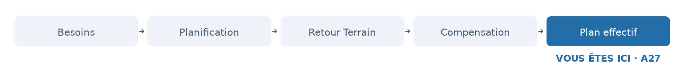
Position dans le flux · étape A27
Rôle Opérateur ou responsable atelier habilité
Document Material Cutting Plan / UX 2.0
Objectif Retour au plan initial.
Pourquoi cette étape ? Restaurer la référence juste après Planification quand la réinitialisation est appropriée.
Quand l’utiliser Au passage indiqué du flux, après contrôle des entrées nécessaires.
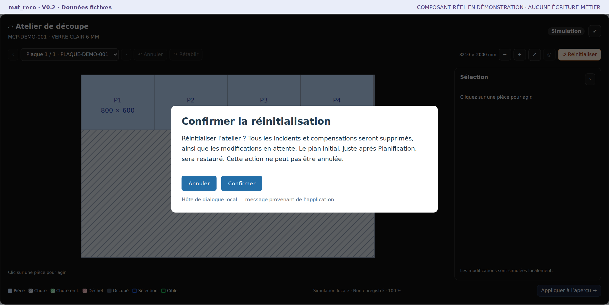
Figure 43 · A27_01 — Lire la portée avant de confirmer ou annuler. [démonstration ; à confirmer sur site]
Entrées / prérequis MCP brouillon ; décision de restauration ; absence de Repack soumis lié.
Actions à réaliser
Cliquer Réinitialiser.
Lire le message de suppression.
Annuler pour conserver l’état, ou confirmer.
Contrôler le plan initial et les incidents supprimés.
Points de contrôle
Portée complète comprise.
Historique vidé après succès.
Conflit ou production soumise bloque la suppression.
Résultat attendu Retour au plan initial.
Étape suivante A07
Attention / erreurs fréquentes Supprime les incidents sauvegardés et en attente ainsi que les compensations. Ne relance pas l’optimisation et ne peut pas être annulé depuis l’historique. Voir E07, E11.
A28 · Préparer la clôture et la soumission MCP
Procédure proposée à valider
Position dans le flux · étape A28
Rôle Opérateur ou responsable atelier habilité
Document Material Cutting Plan / UX 2.0
Objectif Plan contrôlé pour la phase stock.
Pourquoi cette étape ? Clôturer les contrôles atelier sans inventer un ordre de soumission ERP non validé.
Quand l’utiliser Au passage indiqué du flux, après contrôle des entrées nécessaires.
Figure 42 · A26_01 — Contrôler le remplacement et les restes conservés. [démonstration ; à confirmer sur site]
Appliquer les incidents et contrôler les résultats.
Faire vérifier la couverture par le responsable.
Choisir le circuit de soumission MCP / Repack approuvé sur le site.
Points de contrôle
Besoins non couverts bloquants.
Document prêt pour les contrôles stock.
Responsable de validation connu.
Résultat attendu Plan contrôlé pour la phase stock.
Étape suivante S01 / S02
Attention / erreurs fréquentes L’ordre exact de soumission MCP et Repack reste une décision ouverte. La soumission MCP verrouille les modifications atelier. Voir E12.
Flux 3 · Stock / Recomposition
Prolongement du Flux 3 : matérialiser la transformation et retourner au client
Schéma G06 · Carte détaillée de ce parcours.
S01 · Comprendre le rôle du Repack
Fonction mat_reco · déduite du code
Position dans le flux · étape S01
Rôle Responsable stock habilité
Document Stock Entry · Repack
Objectif Entrées et sorties identifiées.
Pourquoi cette étape ? Comprendre quand une prévision de découpe devient une consommation et une production de stock.
Quand l’utiliser Au passage indiqué du flux, après contrôle des entrées nécessaires.
Repère de décision du parcours · voir aussi le schéma détaillé de la partie.
Entrées / prérequis Plan effectif enregistré ; séries source et sorties attendues.
Actions à réaliser
Identifier les entrées à consommer.
Identifier les pièces, chutes et éventuels déchets à produire.
Distinguer plan, brouillon Repack et mouvement soumis.
Points de contrôle
Un Repack par transformation contrôlée.
Bonne société.
Séries traçables.
Résultat attendu Entrées et sorties identifiées.
Étape suivante S02
Attention / erreurs fréquentes Le Repack de découpe et celui de recomposition d’un ouvrage sont deux transformations distinctes.
S02 · Créer Draft Repack depuis MCP
Fonction mat_reco · déduite du code
Position dans le flux · étape S02
Rôle Responsable stock habilité
Document Stock Entry · Repack
Objectif Stock Entry brouillon.
Pourquoi cette étape ? Préparer les lignes de Stock Entry à partir du plan effectif sauvegardé.
Quand l’utiliser Au passage indiqué du flux, après contrôle des entrées nécessaires.
Figure 44 · S02_01 — Bouton de préparation du Repack ; pas de soumission automatique. [reconstituée ; à confirmer sur site]
Pas de deuxième consommation d’une entrée déjà soumise.
Résultat attendu Serial No d’entrée contrôlés.
Étape suivante S04
Attention / erreurs fréquentes Si un contrôle est incohérent, ne pas poursuivre sans résolution. Voir E08, E09.
S04 · Contrôler les pièces produites
Fonction mat_reco · déduite du code
Position dans le flux · étape S04
Rôle Responsable stock habilité
Document Stock Entry · Repack
Objectif Produits finis contrôlés.
Pourquoi cette étape ? Produire seulement les pièces conformes au besoin et à l’état effectif.
Quand l’utiliser Au passage indiqué du flux, après contrôle des entrées nécessaires.
Figure 46 · S04_01 — Quatre unités commerciales conformes après compensation. [reconstituée ; à confirmer sur site]
Entrées / prérequis Repack ; pièces et remplacements du plan.
Actions à réaliser
Lire les lignes avec entrepôt cible.
Comparer quantité et dimensions au plan effectif.
Vérifier les identifiants de sorties et la commande.
Points de contrôle
Pièces détruites exclues.
Quantités dues.
Identité commerciale conservée.
Résultat attendu Produits finis contrôlés.
Étape suivante S05
Attention / erreurs fréquentes Si un contrôle est incohérent, ne pas poursuivre sans résolution. Voir E09.
S05 · Contrôler les chutes générées
Fonction mat_reco · déduite du code
Position dans le flux · étape S05
Rôle Responsable stock habilité
Document Stock Entry · Repack
Objectif Leftovers et chutes en L contrôlés.
Pourquoi cette étape ? Enregistrer les chutes réutilisables avec leur géométrie physique.
Quand l’utiliser Au passage indiqué du flux, après contrôle des entrées nécessaires.
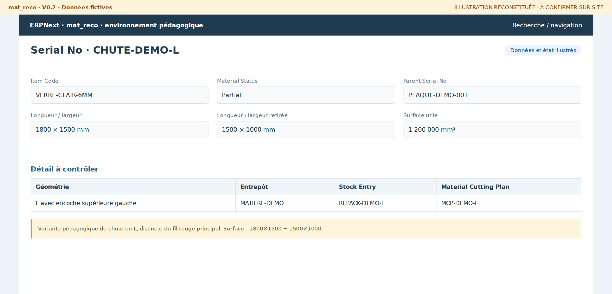
Figure 47 · S05_01 — L’encoche retirée ne représente pas du stock réutilisable. [reconstituée ; à confirmer sur site]
Entrées / prérequis Restes du plan ; sorties de Repack ; éventuelles chutes en L.
Actions à réaliser
Contrôler les sorties leftover.
Lire dimensions extérieures et retirées d’un L.
Vérifier la matière utile et le dépôt cible.
Points de contrôle
Encoche soustraite.
Chute unique si L.
Aucun reste donneur oublié.
Résultat attendu Leftovers et chutes en L contrôlés.
Étape suivante S06
Attention / erreurs fréquentes Une chute en L ne se valorise ni ne se réutilise comme son rectangle extérieur plein. Voir E06, E09.
S06 · Comprendre les déchets
Fonction mat_reco · déduite du code
Position dans le flux · étape S06
Rôle Responsable stock habilité
Document Stock Entry · Repack
Objectif Pertes correctement traitées.
Pourquoi cette étape ? Traiter les pertes selon le choix de stock du circuit, sans les faire passer pour des pièces conformes.
Quand l’utiliser Au passage indiqué du flux, après contrôle des entrées nécessaires.
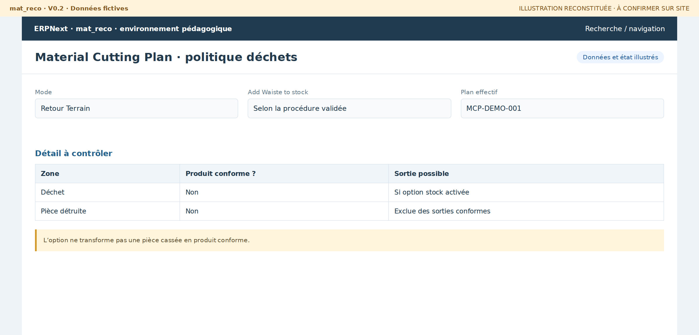
Figure 48 · S06_01 — Déchet et destruction ont des traitements différents. [reconstituée ; à confirmer sur site]
Entrées / prérequis Option Add Waiste to stock du MCP ; déchets et destructions.
Actions à réaliser
Lire l’option choisie.
Comparer les déchets du dessin aux sorties prévues.
Vérifier que les destructions restent exclues des produits conformes.
Points de contrôle
Déchet versus zone détruite.
Quantités / surfaces.
Politique stock validée.
Résultat attendu Pertes correctement traitées.
Étape suivante S07
Attention / erreurs fréquentes Le libellé anglais livré contient « Waiste ». Ne pas activer l’option pour faire disparaître un écart de surface. Voir E09.
S07 · Contrôler les surfaces
Fonction mat_reco · déduite du code
Position dans le flux · étape S07
Rôle Responsable stock habilité
Document Stock Entry · Repack
Objectif Bilan matière contrôlé.
Pourquoi cette étape ? Relier la matière consommée aux pièces, chutes et pertes effectives.
Quand l’utiliser Au passage indiqué du flux, après contrôle des entrées nécessaires.
Figure 49 · S07_01 — Comparer surfaces utiles sur toutes les lignes. [reconstituée ; à confirmer sur site]
Entrées / prérequis Toutes les lignes du Repack ; plan effectif ; unités de mesure.
Actions à réaliser
Comparer surfaces des entrées.
Comparer sorties, restes et pertes.
Exclure les encoches déjà retirées des surfaces utiles.
Points de contrôle
mm² / m² cohérents.
Pertes de coupe.
Toutes les plaques et sources ajoutées prises en compte.
Résultat attendu Bilan matière contrôlé.
Étape suivante S08
Attention / erreurs fréquentes Le nombre de séries et la surface sont deux contrôles différents ; une ligne regroupée peut porter plusieurs unités. Voir E09, E10.
S08 · Contrôler les coûts et valeurs
Fonction mat_reco · déduite du code
Position dans le flux · étape S08
Rôle Responsable stock habilité
Document Stock Entry · Repack
Objectif Valorisation cohérente.
Pourquoi cette étape ? Préserver la cohérence de valorisation de la matière transformée.
Quand l’utiliser Au passage indiqué du flux, après contrôle des entrées nécessaires.
Figure 50 · S08_01 — Contrôler coût d’entrée, répartition et arrondi. [reconstituée ; à confirmer sur site]
Faire vérifier les arrondis et toute valeur nulle.
Points de contrôle
Valeur d’entrée non nulle pour la répartition.
Surface utile des L.
Aucune correction manuelle sans analyse.
Résultat attendu Valorisation cohérente.
Étape suivante S09
Attention / erreurs fréquentes Les règles de coût sont des fonctions du module ; leur recette complète en mouvements soumis reste à valider sur le site. Voir E09, E10.
S09 · Soumettre Stock Entry Repack
Fonction mat_reco · déduite du code
Position dans le flux · étape S09
Rôle Responsable stock habilité
Document Stock Entry · Repack
Objectif Mouvement de stock réel.
Pourquoi cette étape ? Constater le mouvement de consommation et de production réellement effectué.
Quand l’utiliser Au passage indiqué du flux, après contrôle des entrées nécessaires.
Figure 51 · S09_01 — Soumettre le Stock Entry pour constater le mouvement réel. [reconstituée ; à confirmer sur site]
Attention / erreurs fréquentes La soumission Stock Entry et celle du MCP sont distinctes. Un brouillon seul ne rend pas les produits disponibles. Voir E09, E12.
S10 · Recomposition depuis une Sales Order
Fonction mat_reco · déduite du code
Position dans le flux · étape S10
Rôle Responsable stock habilité
Document Stock Entry · Get Pending SO Line
Objectif Repack de recomposition préparé.
Pourquoi cette étape ? Transformer des découpes déjà disponibles en produit / ouvrage de la ligne de commande.
Quand l’utiliser Au passage indiqué du flux, après contrôle des entrées nécessaires.
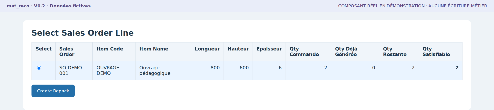
Figure 52 · S10_01 — Recomposer depuis les quatre composants déjà disponibles. [démonstration ; à confirmer sur site]
Entrées / prérequis Pièces en stock ; Sales Order avec quantité restante.
Actions à réaliser
Ouvrir une Stock Entry brouillon Repack avec Company.
Choisir Get Pending SO Line.
Lire restant et satisfaisable ; sélectionner une ligne.
Créer le Repack proposé et contrôler ses lignes.
Points de contrôle
Quantité ne dépasse pas le restant.
Stock couvre les composants.
Circuit actif Create Repack ou variante Generate Repack.
Résultat attendu Repack de recomposition préparé.
Étape suivante S11
Attention / erreurs fréquentes Ce Repack ne doit pas consommer une deuxième fois la plaque du Repack de découpe.
S11 · Contrôler les composants d’un OUVRAGE
Fonction mat_reco · déduite du code
Position dans le flux · étape S11
Rôle Responsable stock habilité
Document Stock Entry · Repack
Objectif Produit composite contrôlé et produit selon procédure.
Pourquoi cette étape ? Vérifier que l’ouvrage est produit avec la totalité des composants conformes.
Quand l’utiliser Au passage indiqué du flux, après contrôle des entrées nécessaires.
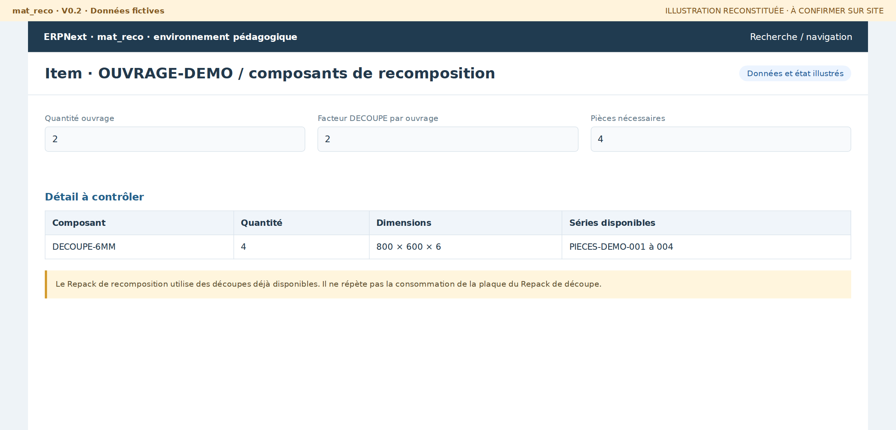
Figure 53 · S11_01 — Satisfaire deux ouvrages avec quatre composants conformes. [reconstituée ; à confirmer sur site]
Vérifier quantité et dimensions des pièces allouées.
Contrôler dépôts et sorties ouvrage.
Soumettre selon les mêmes contrôles stock appropriés.
Points de contrôle
Composants complets.
Article et dimensions exacts.
Quantité d’ouvrage réellement réalisable.
Résultat attendu Produit composite contrôlé et produit selon procédure.
Étape suivante S13
Attention / erreurs fréquentes Si le stock ne couvre qu’une partie de la commande, la quantité satisfaisable limite la génération. Ne pas ignorer un composant manquant.
S12 · Comprendre Material Reconfiguration historique
Historique · fonctionnement spécifique
Position dans le flux · étape S12
Rôle Responsable stock habilité
Document Material Reconfiguration
Objectif Circuit historique identifié.
Pourquoi cette étape ? Connaître un circuit ancien sans le mélanger avec le MCP UX 2.0.
Quand l’utiliser Au passage indiqué du flux, après contrôle des entrées nécessaires.
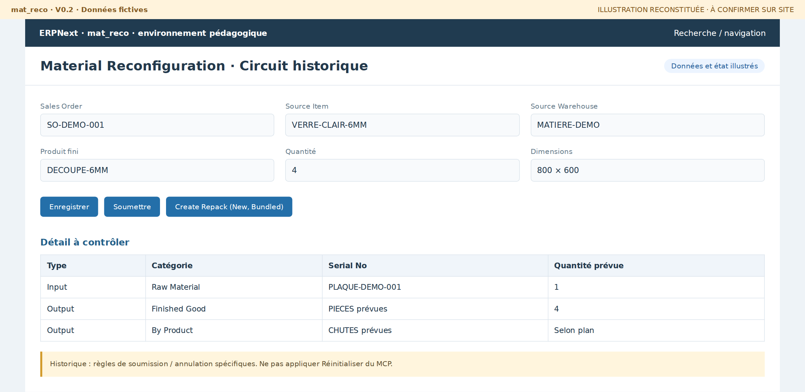
Figure 54 · S12_01 — Circuit distinct, à confirmer avant usage opérationnel. [reconstituée ; à confirmer sur site]
Entrées / prérequis Material Reconfiguration ; commande ; produit ; matière.
Actions à réaliser
Lire le plan proposé et les lignes Detail.
Contrôler un éventuel plan partiel.
Soumettre uniquement selon le circuit historique validé.
Utiliser Create Repack (New, Bundled) pour le Stock Entry associé.
Points de contrôle
Raw Material / Finished Good / By Product.
Changement d’état de séries à la soumission historique.
Annulation spécifique.
Résultat attendu Circuit historique identifié.
Étape suivante S13 si ce circuit est retenu
Attention / erreurs fréquentes Ce document a une logique de soumission / annulation distincte. La procédure Réinitialiser du MCP ne s’y applique pas.
S13 · Suivre les nouveaux Serial No
Fonction mat_reco · déduite du code
Position dans le flux · étape S13
Rôle Responsable stock habilité
Document Serial No / Serial and Batch Bundle
Objectif Traçabilité de production contrôlée.
Pourquoi cette étape ? Relier les nouvelles unités à la matière consommée et au mouvement exécuté.
Quand l’utiliser Au passage indiqué du flux, après contrôle des entrées nécessaires.
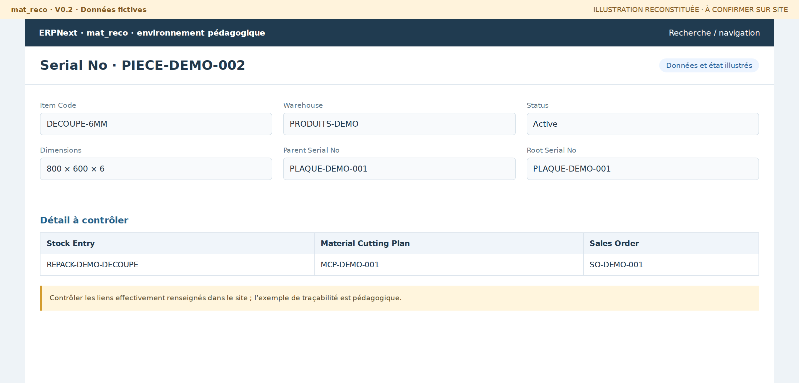
Figure 55 · S13_01 — Pièce produite reliée à la matière et au mouvement. [reconstituée ; à confirmer sur site]
Entrées / prérequis Repack soumis ; Serial No et bundles de sortie.
Actions à réaliser
Ouvrir les séries produites.
Vérifier article, dimensions et dépôt.
Lire liens MCP, mouvement, parent et racine quand renseignés.
Points de contrôle
Série réellement produite.
Liens présents et cohérents.
Pas de confusion nom prévu / unité disponible.
Résultat attendu Traçabilité de production contrôlée.
Étape suivante S14
Attention / erreurs fréquentes Si un contrôle est incohérent, ne pas poursuivre sans résolution.
S14 · Mettre les produits à disposition du Flux Client
Procédure proposée à valider
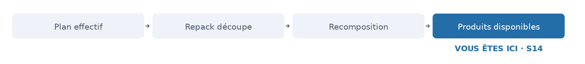
Position dans le flux · étape S14
Rôle Responsable stock habilité
Document Serial No / stock / Sales Order
Objectif Produits à disposition du client.
Pourquoi cette étape ? Redonner au Flux Client un résultat livrable, pas une promesse de fabrication.
Quand l’utiliser Au passage indiqué du flux, après contrôle des entrées nécessaires.
Figure 56 · S14_01 — Retour S14 → C08 / C09 : deux ouvrages prêts à livrer. [reconstituée ; à confirmer sur site]
Entrées / prérequis Pièces ou ouvrages conformes ; mouvement soumis ; disponibilité.
Actions à réaliser
Vérifier quantité disponible.
Identifier les unités livrables.
Transmettre les références au responsable livraison.
Reprendre le flux commercial en C08.
Points de contrôle
Bonne commande.
Bon article livré : découpe ou ouvrage.
Dépôt et séries disponibles.
Résultat attendu Produits à disposition du client.
Étape suivante C08 / C09 — reprendre le Flux 2
Attention / erreurs fréquentes Si un contrôle est incohérent, ne pas poursuivre sans résolution.
Partie V · Gestion des exceptions
Revenir à la fiche d’origine après correction, sans contourner les contrôles.
Tableau 6 — Index des exceptions
Code
Situation
Étapes liées
E01
Commande introuvable
C07, A03
E02
Matière insuffisante
F01, A04, A19
E03
Dimensions incompatibles
C03, A12–A17
E04
Pièce cassée
A15, A25
E05
Compensation impossible
A20–A24
E06
Chute en L non exploitable
A17, S05
E07
Conflit entre deux utilisateurs
A18, A24, A27
E08
Serial No indisponible
F09, S03, C11
E09
Repack refusé
S02–S09
E10
Différence de surface ou de valeur
S07, S08
E11
Annulation et réinitialisation
A18, A24, A27
E12
Document déjà soumis
A28, S09
E01 · Commande introuvable
Vous êtes dans une exception du parcours : C07, A03
Survient à C07, A03
Objectif Résoudre l’écart avant de poursuivre le flux.
Vérifier Matière source, hiérarchie d’article, commande et périmètre sélectionné.
Action Vérifier la Sales Order et recharger Select Orders for Source Item.
Résultat attendu Le contrôle bloquant est compris et résolu, ou transmis au responsable.
Reprendre à A03
Attention Ne pas modifier les séries ou les données techniques pour faire disparaître le message. Conserver référence, message exact et capture pour le responsable.
E02 · Matière insuffisante
Vous êtes dans une exception du parcours : F01, A04, A19
Survient à F01, A04, A19
Objectif Résoudre l’écart avant de poursuivre le flux.
Vérifier Quantité physique et séries admissibles ; épaisseur et entrepôt.
Action Actualiser le stock ; qualifier une matière adaptée ou faire approvisionner.
Résultat attendu Le contrôle bloquant est compris et résolu, ou transmis au responsable.
Reprendre à F01 / A04
Attention Ne pas modifier les séries ou les données techniques pour faire disparaître le message. Conserver référence, message exact et capture pour le responsable.
E03 · Dimensions incompatibles
Vous êtes dans une exception du parcours : C03, A12–A17
Survient à C03, A12–A17
Objectif Résoudre l’écart avant de poursuivre le flux.
Vérifier Les deux dimensions, l’épaisseur, l’espace utile et l’encoche.
Action Essayer la rotation autorisée ; sinon choisir une autre source, sans modifier la commande sans accord.
Résultat attendu Le contrôle bloquant est compris et résolu, ou transmis au responsable.
Reprendre à A13 / A22
Attention Ne pas modifier les séries ou les données techniques pour faire disparaître le message. Conserver référence, message exact et capture pour le responsable.
E04 · Pièce cassée
Vous êtes dans une exception du parcours : A15, A25
Survient à A15, A25
Objectif Résoudre l’écart avant de poursuivre le flux.
Vérifier Pièce réellement cassée et identité de la commande.
Action Détruire, confirmer et appliquer ; relire les besoins et compenser.
Résultat attendu Le contrôle bloquant est compris et résolu, ou transmis au responsable.
Reprendre à A19
Attention Ne pas modifier les séries ou les données techniques pour faire disparaître le message. Conserver référence, message exact et capture pour le responsable.
E05 · Compensation impossible
Vous êtes dans une exception du parcours : A20–A24
Survient à A20–A24
Objectif Résoudre l’écart avant de poursuivre le flux.
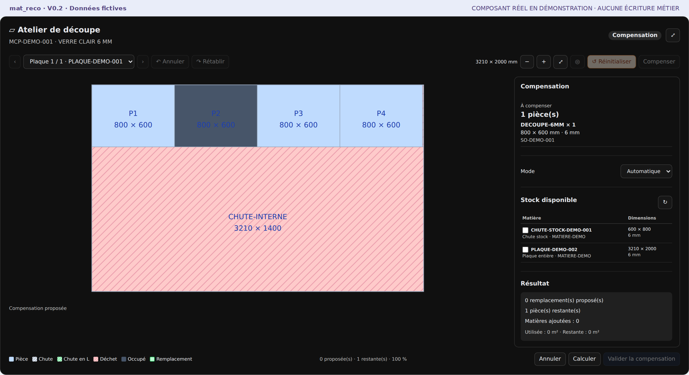
Figure 57 · E05_01 — Le besoin restant n’autorise pas une clôture forcée. [démonstration]
Vérifier Sources internes, chutes stock, plaques, avertissements et besoins restants.
Action Actualiser puis recalculer ; approvisionner si aucune matière compatible ne couvre le besoin.
Résultat attendu Le contrôle bloquant est compris et résolu, ou transmis au responsable.
Reprendre à A22 / F01
Attention Ne pas modifier les séries ou les données techniques pour faire disparaître le message. Conserver référence, message exact et capture pour le responsable.
E06 · Chute en L non exploitable
Vous êtes dans une exception du parcours : A17, S05
Survient à A17, S05
Objectif Résoudre l’écart avant de poursuivre le flux.
Vérifier Encoche supérieure gauche, contiguïté et matière retirée.
Action Choisir une autre zone libre ; ne pas compter le grand rectangle comme surface utile.
Résultat attendu Le contrôle bloquant est compris et résolu, ou transmis au responsable.
Reprendre à A12 / A17
Attention Ne pas modifier les séries ou les données techniques pour faire disparaître le message. Conserver référence, message exact et capture pour le responsable.
E07 · Conflit entre deux utilisateurs
Vous êtes dans une exception du parcours : A18, A24, A27
Survient à A18, A24, A27
Objectif Résoudre l’écart avant de poursuivre le flux.
Figure 58 · E07_01 — Recharger avant de reprendre une action sur le nouveau plan. [démonstration]
Vérifier Le message de conflit et la version courante du document.
Action Conserver la référence du travail ; recharger, vérifier l’état puis refaire l’action sur la nouvelle version.
Résultat attendu Le contrôle bloquant est compris et résolu, ou transmis au responsable.
Reprendre à A18 / A24
Attention Ne pas modifier les séries ou les données techniques pour faire disparaître le message. Conserver référence, message exact et capture pour le responsable.
E08 · Serial No indisponible
Vous êtes dans une exception du parcours : F09, S03, C11
Survient à F09, S03, C11
Objectif Résoudre l’écart avant de poursuivre le flux.
Figure 59 · E08_01 — Sortie matière annexe, à ne pas confondre avec la casse d’une pièce du MCP. [reconstituée]
Vérifier Entrepôt, état, mouvement soumis et bundle de la série.
Action Actualiser les séries ; choisir seulement une unité réellement disponible.
Résultat attendu Le contrôle bloquant est compris et résolu, ou transmis au responsable.
Reprendre à S03 / C09
Attention Ne pas modifier les séries ou les données techniques pour faire disparaître le message. Conserver référence, message exact et capture pour le responsable.
E09 · Repack refusé
Vous êtes dans une exception du parcours : S02–S09
Survient à S02–S09
Objectif Résoudre l’écart avant de poursuivre le flux.
Action Corriger le contrôle signalé sur le brouillon ; ne pas soumettre un deuxième Repack pour les mêmes séries.
Résultat attendu Le contrôle bloquant est compris et résolu, ou transmis au responsable.
Reprendre à S03
Attention Ne pas modifier les séries ou les données techniques pour faire disparaître le message. Conserver référence, message exact et capture pour le responsable.
E10 · Différence de surface ou de valeur
Vous êtes dans une exception du parcours : S07, S08
Survient à S07, S08
Objectif Résoudre l’écart avant de poursuivre le flux.
Vérifier Unités mm / m², encoche, déchets, coûts d’entrée et arrondis.
Action Comparer tout le plan effectif au Repack ; faire contrôler la valorisation par le responsable stock.
Résultat attendu Le contrôle bloquant est compris et résolu, ou transmis au responsable.
Reprendre à S07
Attention Ne pas modifier les séries ou les données techniques pour faire disparaître le message. Conserver référence, message exact et capture pour le responsable.
E11 · Annulation et réinitialisation
Vous êtes dans une exception du parcours : A18, A24, A27
Survient à A18, A24, A27
Objectif Résoudre l’écart avant de poursuivre le flux.
Vérifier Portée exacte : action, proposition, historique ou plan entier.
Action Annuler localement pour abandonner ; Réinitialiser exige confirmation et absence de Repack soumis lié.
Résultat attendu Le contrôle bloquant est compris et résolu, ou transmis au responsable.
Reprendre à A27
Attention Ne pas modifier les séries ou les données techniques pour faire disparaître le message. Conserver référence, message exact et capture pour le responsable.
E12 · Document déjà soumis
Vous êtes dans une exception du parcours : A28, S09
Survient à A28, S09
Objectif Résoudre l’écart avant de poursuivre le flux.
Figure 60 · E12_01 — Un document soumis empêche les modifications ; statut simulé en démonstration. [démonstration]
Vérifier Statut du document et liens de stock déjà soumis.
Action Consulter sans modifier. Toute annulation / amendement relève du responsable et du circuit ERPNext approuvé.
Résultat attendu Le contrôle bloquant est compris et résolu, ou transmis au responsable.
Reprendre à 03 / E11
Attention Ne pas modifier les séries ou les données techniques pour faire disparaître le message. Conserver référence, message exact et capture pour le responsable.
Partie VI · Exercices et validation
Jeu de recette isolé ; aucun exercice ci-dessous n’a été soumis sur des documents métier pour ce guide.
Les trois exercices relient les flux. Ils seront exécutés avec les rôles du site et un responsable de validation. Les soumissions et annulations doivent suivre le circuit approuvé.
X01 · Réception de plaques fournisseur
F01 → F02 → F03 → F04 → F07 → F08 → F09
Objectif Deux plaques identifiées et disponibles dans le dépôt matière.
Entrées Société et fournisseur de formation ; VERRE-CLAIR-6MM ; deux plaques 3210 × 2000 × 6 mm.
Actions à réaliser
Choisir le circuit d’achat retenu.
Créer la commande puis préparer la réception de deux unités.
Contrôler les dimensions et les séries.
Soumettre selon la procédure de formation.
Vérifier le dépôt et la disponibilité.
Points de contrôle
□ Une série par unité ; aucune double réception.
□ Total surface = 12,84 m².
□ Épaisseur 6 mm et dimensions positives.
□ Justificatif, mouvement et séries cohérents.
Ensuite A04 / A05
Preuve à conserver Documents, séries, messages et captures de la recette réellement exécutée, avec date et validateur.
X02 · Commande client avec découpe réussie
C01–C07 → A01–A10 → A26 → S02–S11 → S14 → C08–C13
Objectif Deux ouvrages livrables avec quatre composants DECOUPE-6MM.
Entrées OUVRAGE-DEMO : facteur 2 DECOUPE ; commande de 2 ouvrages ; dimensions 800 × 600 × 6 mm.
Actions à réaliser
Préparer devis, dimensions et services.
Créer la commande et confirmer les quatre unités de découpe.
Planifier le MCP avec le kerf réellement retenu pour la recette.
Contrôler et soumettre le Repack de découpe selon le circuit validé.
Préparer la recomposition, puis revenir à la livraison et à la facture.
Points de contrôle
□ 2 ouvrages × 2 composants = 4 découpes.
□ Surface utile des 4 découpes = 1,92 m².
□ Service PERIMETRE de la ligne parent : 5,6 m pour 2 unités.
□ Aucune seconde consommation de la plaque en recomposition.
□ Aucune double sortie livraison / facture.
Ensuite V01
Preuve à conserver Documents, séries, messages et captures de la recette réellement exécutée, avec date et validateur.
X03 · Commande avec casse, compensation puis Repack
C07 → A01–A18 → A19–A26 → S02–S09 → C08
Objectif Une unité cassée remplacée sans perdre le lien commercial ni la matière d’origine.
Entrées MCP de formation ; pièce P2 de l’unité commerciale 2 ; chute interne et sources de stock.
Actions à réaliser
Désactiver Allow Rotation en Planification pour vérifier l’indépendance de la rotation terrain.
Passer en Retour Terrain ; tester un déplacement à 90° sur une chute 600 × 800.
Annuler ce test puis détruire P2 et appliquer l’incident.
Calculer la compensation interne puis tester les variantes stock / plaque entière.
Vérifier annulation, confirmation, casse successive et contrôle du plan effectif.
Préparer le Repack sur le scénario réellement approuvé.
Points de contrôle
□ Trois conformes + un besoin restant après la casse.
□ Une seule unité commerciale est remplacée.
□ La rotation terrain fonctionne avec case initiale décochée.
□ Calculer ne sauvegarde pas ; Valider confirme la compensation.
□ Réinitialiser exige un avertissement ; annuler ne supprime rien.
□ Production déjà soumise figée.
Ensuite V01
Preuve à conserver Documents, séries, messages et captures de la recette réellement exécutée, avec date et validateur.
V01 · Validation et décisions ouvertes
La version v0.2 est une base éditoriale, pas une procédure approuvée.
Tableau 7 — Décisions de flux et de droits
Priorité
Sujet
Responsable
V01
Ordre MCP / Repack
Responsable atelier + stock
V02
Rôles et droits
Administrateur / responsable
V03
Chemin fournisseur
Achats / stock
V04
Double réception
Stock
V05
Chemins de facturation
Commercial / facturation
V06
Activation des scripts et fixtures
Administrateur
V07
Champs de dimensions
Administrateur / stock
V08
Dialogue Repack SO
Administrateur
La liste complète est fournie séparément dans Points-a-valider-mat_reco-v0.2.docx et dans le classeur d’index. Faire valider ensuite les exceptions, les coûts et les captures de session ERPNext.
Fin de poste Besoin couvert ; incidents appliqués ; mouvements contrôlés ; séries disponibles ; exceptions transmises.
Validé par : ____________________ Fonction : ____________________
Date : ____________________ Version approuvée : ____________________
Glossaire
Tableau 8 — Lexique métier
Terme
Lecture utilisateur
MCP
Material Cutting Plan ; rapproche les besoins de découpe et la matière.
Plan initial
Référence sauvegardée après Planification.
Plan effectif
Résultat tenant compte des incidents et compensations enregistrés.
Retour Terrain
Mode de constat des résultats réels de coupe.
Serial No
Identifiant d’une unité physique sérialisée.
Bundle
Serial and Batch Bundle ; groupe les séries d’une ligne de mouvement.
Full / Partial
États matériels : entier / partiellement utilisé.
Is Qualified
Matière admise au calcul.
Is Active Input
Matière réellement utilisée par le plan.
DECOUPE
Pièce dimensionnée issue d’une matière source.
OUVRAGE
Article composite, avec composants et facteurs de quantité.
Kerf
Largeur de matière perdue par le trait de coupe, en millimètres.
Chute / Leftover
Reste conservé et potentiellement réutilisable.
Chute en L / Single
Reste physique dont une encoche supérieure gauche est retirée.
Destroy
Déclaration de matière détruite, indisponible comme sortie conforme.
Compensation
Remplacement des unités commerciales restant à produire.
Repack découpe
Consomme la matière et produit des pièces / chutes.
Repack recomposition
Consomme des composants disponibles et produit un ouvrage.
Brouillon
Document enregistré mais non soumis.
Soumettre
Valider le document selon les règles ERPNext ; distinct d’un aperçu.
mm² → m²
Diviser par 1 000 000.
Périmètre en m
2 × (longueur + largeur en mm) / 1 000.
N01 · Annexes : réglages et circuits complémentaires
Reconfiguration Settings Réglages administrateur : kerf, seuils de conservation, rotation, split, réutilisation, stratégie, algorithme et heuristique.
Certains paramètres concernent surtout le moteur historique. Ne pas supposer qu’ils pilotent tous les écrans. Le réglage de Planification ne bloque jamais la rotation à 90° en Retour Terrain.
Material Issue Plan Sortie matière annexe : Reason, séries qualifiées et contrôle avant soumission. Le plan crée / soumet Material Issue ; ce n’est pas la compensation d’une pièce du MCP.
Material Production Plan Structure de formulaire présente, contrôleur sans orchestration active. Ne pas présenter génération d’arbre, contrôle stock ou production comme un parcours automatisé confirmé.
N02 · Sources, limites et contrôle documentaire
La refonte suit les deux architectures fournies le 14 octobre 2026. Les règles propres au module sont rapprochées des contrôleurs, services, hooks, fixtures et composants Vue. Les transitions achat / vente proviennent des sources ERPNext locales.
Tableau 9 — Niveaux de preuve
Catégorie
Signification
Déduit du code
Fonction identifiée dans les sources ; pas une recette complète en production.
Standard ERPNext
Parcours de document standard ; états, droits et options restent dépendants du site.
Procédure proposée
Contrôle physique, responsabilités ou transition métier à approuver.
Historique
Circuit Material Reconfiguration avec effets de soumission / annulation spécifiques.
Hors périmètre automatisé
Material Production Plan et fonctions non orchestrées dans le contrôleur actuel.
Provenance des 60 usages indexés : 26 démonstrations de composants réels et 34 illustrations reconstituées, avec 54 fichiers image distincts mutualisés. Aucune capture d’une session métier authentifiée n’est revendiquée. Les réponses de sauvegarde montrées sont locales et simulées.
À remplacer / confirmer Formulaires ERPNext fournisseur / client / stock, apparence des hôtes de dialogue, scripts réellement actifs, droits et formats imprimés.
Le manifeste de sources et le dossier de validation permettent de contrôler les assertions et les visuels. Le PDF de lecture est rendu depuis le même contenu que le Word ; il n’est pas une conversion effectuée par Word.
I01 · Index des captures et navigation des assets
Le fichier INDEX_CAPTURES.xlsx est à la racine de MANUEL_GLOBAL_MAT_RECO. Il contient identifiant, fichier, flux, étape, écran, message pédagogique, statut, source et annotations. Ouvrir les PNG en pleine résolution pour la formation ou Skywork.


 Action Gestes à réaliser.
Action Gestes à réaliser. Contrôle Points à vérifier.
Contrôle Points à vérifier.
 Rôle Responsable stock / achats
Rôle Responsable stock / achats